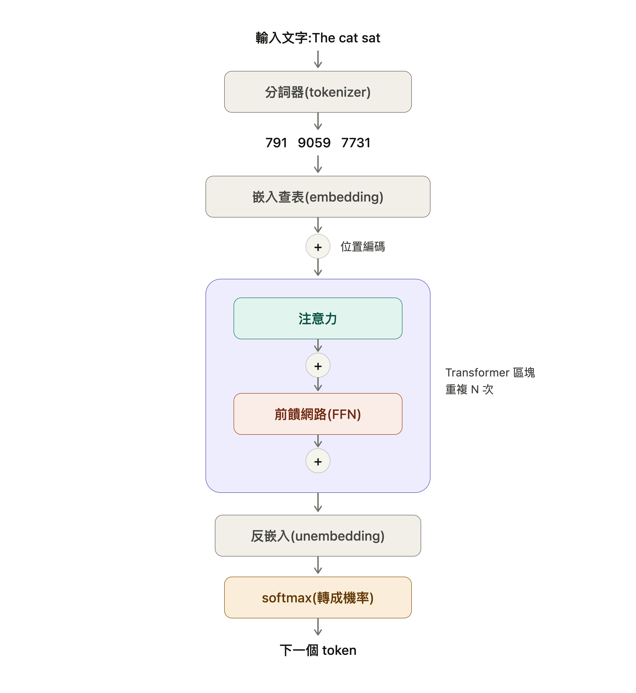
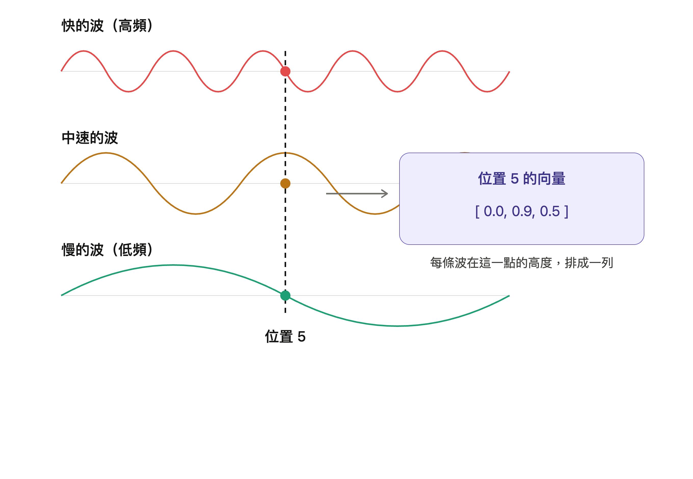
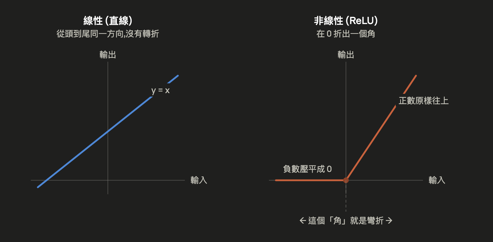
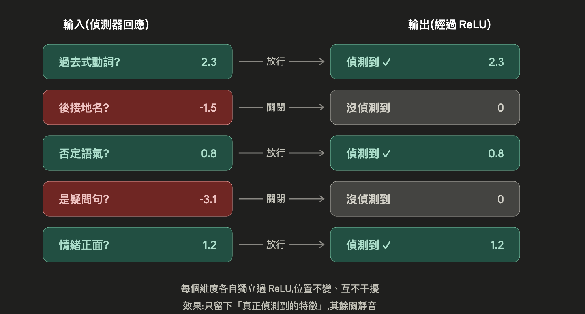
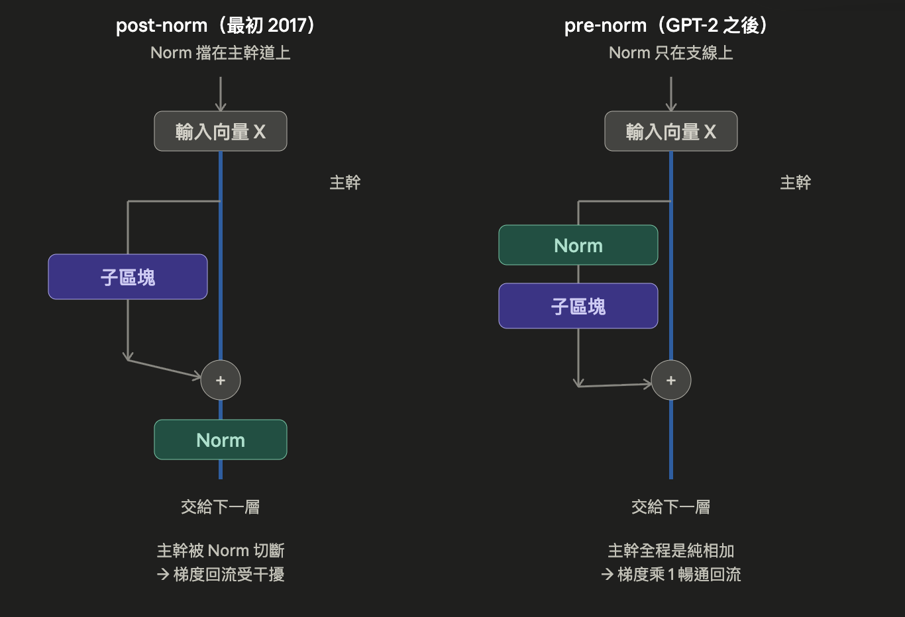

LLM 如何運作?
這篇文章概述 LLM 的工作原理。主流的大語言模型 LLM 大多是通過一層層堆疊 Transformer 區塊（block）建構而成的。因此只要理解了 Transformer 的運作機制就能掌握大部分的核心知識。
Transformer 是一種神經網路架構。
這裡將會介紹基於 Transformer 的大型語言模型的核心運作機制，但不會涉及太多瑣碎的數學內容。數學還是很重要的，不過這篇文章我們就當作入門導讀。
大部分現代主流 LLM 都使用同一套 Transformer 家族的基本骨架，各家 LLM 的差異主要來自三方面；各自的訓練資料、規模和設定的選擇、以及後續的 Post-training（預訓練後的微調、RLHF 基於人類回饋的強化學習等步驟）。在讀完本文後，您應該就能夠在閱讀現代 LLM 論文或者模型規格、特性的標準文件（Model card），了解每個章節對應的是架構中的哪個部分。
下面是我們的學習路徑：
- Token - 一串文字是如何變成一連串整數。
- Embedding - 這些整數是如何獲得語意。
- Positional encoding 位置編碼 - 模型要如何知道 Token 的先後順序。
- Attention 注意力機制 - token 之間是如何互相傳遞資訊。
- Multi-head attention 多頭注意力 - 模型如何同時追蹤多種不同的關聯。
- The feed-forward network 前饋神經網路 - 模型所儲存的知識結構，大部分都存放在這裡。
- The residual stream and layer normalization 殘差流與層正規化 - 讓深層堆疊得以順利訓練的關鍵（前者解決訊號層層傳遞會失真，後者處理數值經多層運算會爆炸或消失的問題）
- 預測下一個 token - 模型實際輸出的是什麼，以及生成迴圈如何運作。
- 架構 vs 訓練後的權重 - 現代 LLM 之間哪些是共通的，哪些各自不同。

整篇文章我們會盡量補充各種說明，因此不管什麼背景，任何人都可以閱讀。
Tokenization 分詞
首先，模型無法直接閱讀文字。而是讀取整數 ID 比如說 the 的整數 ID 為 464。將我們的提示詞 prompt 轉換成一連串整數的這個步驟叫做 Tokenization 分詞。分詞器（Tokenizer）接收一段字串，產生出一連串整數，其中每個整數都指向一個固定詞彙表（Vocabulary）中的某個項目。現代大型語言模型的詞彙表，通常包含數萬到數十萬個項目不等。
上面所謂的整數 ID 也就是 Token ID 是模型用來表示詞彙表中某個項目的整數。模型實際處理的是這個數字，而不是文字本身。文字 → Tokenizer 分割 → Token ID 序列 → 模型處理。
token 詞元通常不是完整單字，而是單字的一部分稱為子詞 Subword，這在英文中比較容易體現例如 tokenization → ["token", "ization"] ，running -> ["run", "ning"]。這樣設計是為了提升效率。以完整單字為單位的詞彙表會過於龐大，也難以處理沒見過的新詞；以單一字元為單位的詞彙表則太過瑣碎，迫使模型從頭學習最基本的文字規律。子詞分詞（subword tokenization）介於兩者之間。常見的文字片段會成為單一 token，而罕見或新出現的詞，則由較小的片段組合而成。
詞彙表是 Tokenizer 所使用的一份固定文字片段清單。每個片段都有一個對應的 ID，而模型只能直接接收這份清單中的 ID。
這個設計的代價則就是會有一些非預期的狀況，典型的例子就是詢問 LLM “strawerry” 有幾個字母 “r” 。過去舊的 LLM 通常會回答錯誤。這並不單純代表模型不會計數，而是因為模型並非直接以單一字母為單位處理文字。它實際處理的是 token ID，而這些 ID 所對應的文字片段，組合起來才形成一個人類可以理解的單字。

不同的模型家族使用不同的分詞器 Tokenizer。GPT 模型使用 Byte Pair Encoding 系列。SentencePiece 則常見於 LLaMA 風格的模型。分詞器的選擇對運算量有影響（token 越少，運算工作越少），也會影響多語言涵蓋能力等面向，但基本形態都一樣：文字輸入，整數輸出。
現在提示詞變成一連串數字了，下一步就是要賦予這些整數意義。
Embeddings 嵌入
一個 Token ID 如 1024 就只是一個資料列的索引。它本身不代表任何意義。賦予它意義的是一個叫做 Embedding Matrix 嵌入矩陣的巨大表格。每一個模型都有一個嵌入矩陣。詞彙表中的每個項目，都對應矩陣裡的一列；而每一列都是由許多數字組成的長向量。每列包含多少個數字，取決於模型的「隱藏層維度（Hidden size）」。許多約 70 億參數的模型一個 token 包含 4096 個數字的向量，而更大的模型通常會使用維度更高的向量。
向量：就是一串有順序的數字。在 Transformer 中，每個 token 都會被轉成向量，讓模型能夠進行數學運算處理。
當分詞器向模型提供一個數字 ID 時，模型會在嵌入矩陣中找到該 ID 對應的資料列，接著使用其中的向量進行運算。這個向量就是該 token 的「嵌入向量（embedding）」。也就是模型在訓練過程中學到的對該 token「含義」的數值表示。它所承載的語意並非由人類事先寫入，而是模型在訓練過程中逐漸學習出來的。
嵌入矩陣就是一個查找表。輸入 Token ID，輸出學習得來的向量。
這些 Embedding 有個有趣的特性，語意相近或關係密切的 Token，最後往往會具有相似的向量，在向量空間中的位置也比較接近。比如說「king」的向量在空間中和「queen」的向量很接近，而「Paris」的向量和「France」很接近。這一切都不是寫死的，而是從足夠的文字訓練中自然浮現出來的。模型之所以學到這些位置，是因為它們有助於準確預測文字。我們甚至可以對 Embedding 進行算數運算，而且有時能得到符合語意的結果。最著名的例子是 king − man + woman ≈ queen（國王 − 男人 + 女人 ≈ 皇后）。嵌入空間的幾何結構承載著真實的語意結構，即便從來沒有人告訴模型要這樣建構。

需要特別說明的是；在這個階段，每個 token 都已經被轉換成 Embedding 嵌入向量，但是嵌入向量本身不包含 token 位於序列中的位置的資訊。以一個提示詞舉例「狗咬人」我們到此得到全部 token 的向量，但是 Transformer 的運算並不是由左向右一個一個讀取，而是全部同時看，這個時候如果沒有標註順序對模型來說分不出順序。
無論「狗」出現在提示詞的第一個位置，還是第三個位置，它最初查表取得的嵌入向量都相同。因此模型必須知道 token 的排列順序，才能正確理解句子的含義。
而「位置編碼（positional encoding）」正是用來補足這項缺少的位置資訊。
⚠️ 補充：如果你曾經使用大語言模型提供的 API 進行 embedding，注意這個和上面說明的 embedding 不同，API 回傳的 embedding 是模型跑完所有層之後的產物，包含位置編碼。因此兩個向量是可以做語意搜尋：
2
3
4
FROM documents
ORDER BY embedding <=> '[0.2, -0.5, ...]' -- <=> 是餘弦距離運算子
LIMIT 5;
Positional encoding 位置編碼
單純的自注意力機制 self-attention 本身沒有內建的詞序表示能力。也就是說，如果沒有某種位置表示機制，它就無法直接知道「狗」是出現在「咬」之前，還是出現在「咬」之後。
token 的順序會改變意思。因此模型還需要另一個組件：一種能把每個 token 的位置資訊注入的數學運算方法。
位置編碼是模型取得順序資訊的方式。它會告訴模型每個 token 位於整個序列中的哪個位置。
最早的 Transformer 論文（Vaswani et al. 2017） 採用的是「正弦式位置編碼」。它會為每個位置產生一組固定的數字向量，用來表示「這是第幾個位置」，並在進入 self-attention 之前，把這組位置向量直接加到每個 token 的 embedding 向量上。
例如，假設「狗」的 embedding 是：
1 | 狗 = [0.5, 0.2, 0.9] |
所以，同樣是「狗」，只要出現的位置不同，進入 self-attention 前的向量也會不同。模型因此不只拿到「這個 token 是什麼」，也拿到「它在序列中的哪個位置」。
原始 Transformer 不是隨機替每個位置產生數字，而是用 sin 和 cos 這兩種有規律的數學波形來產生位置向量。簡單來說，每個位置的向量，是由多條不同快慢的波，在該位置上的數值組合而成。

乍看之下非常茫然，您可以把它想像成「秒針、分針、時針」一起描述時間的概念：只看秒針會很快重複，但同時看秒、分、時，就能在很長一段範圍內分辨出不同時間點。sin/cos 位置編碼也是類似概念：單一波形會週期性重複，但多個不同頻率的波形組合在一起，就能為不同位置提供可區分、且有規律的位置訊號。
選用正弦式編碼 Sinusoidal encodings 的原因之一，是因為它不是靠查表記住每個位置，而是用公式計算位置向量。因此，即使模型訓練時看的序列較短，理論上仍然可以用同一套公式計算更後面的位置，例如第 5000 個位置。
不過，這種把位置資訊「直接相加」進 Token embedding 的做法「加法式絕對位置編碼」，仍然有兩個問題；隨著模型規模變大，這些問題會越來越明顯：
- Token embedding 必須用同一組數字同時承載「語意」和「位置」。能塞進同一個向量空間裡的資訊終究有限。
- 除了上面的正弦式編碼，另一種學習式絕對位置嵌入（learned absolute position embeddings）它不像 sin/cos 一樣用公式產生位置向量，而是像一張位置查表。遇到沒見過的長度會失效。如果模型訓練時最多只看過 2048 個 token，那它只真正學過位置 1 到位置 2048 的向量。當你丟進 5000 個 token 的長文本時，第 5000 個位置自然也沒學過它的向量。等真的遇到 5000 token 的輸入時，查到底就沒東西可查，只能亂抓。
基於上述問題，現代模型大多使用另一種稱為 旋轉位置嵌入（Rotary Position Embeddings, RoPE） 的方法。RoPE 由 Su 等人在 2021 年提出，現在被 LLaMA、Mistral、Gemma、Qwen，以及大多數開放權重模型採用。
所謂權重 weight 就是模型訓練完之後學到的那一大堆參數數字。open-weight 即這些參數結果是開源的。
要理解 RoPE，我們得先知道一件事 - 向量可以「旋轉」。
比如 [3, 0] 意思是向右 3，向上 0，也就是向右平移 3，把一個向量旋轉一個角度之後它還是 2 個數字
1 | 新的往右 = 舊的往右 × cos(θ) − 舊的往上 × sin(θ) |
這就是 RoPE 裡「旋轉」的基本概念。原本的位置資訊是用加法放進向量裡；RoPE 則是用「旋轉角度」來表示位置。位置資訊就這樣藏進角度裡。
每個 token 本來都有一個 embedding 向量，然後進入注意力機制時，這個向量會乘於 3 個不同的權重表（模型訓練的參數）產生 3 個向量 Query、Key、Value。
Query 可以想成「查詢條件」，Key 可以想成「自我介紹」，模型會用某個 token 的 Query 去和其他 token 的 Key 比對。例如「那隻狗在追牠的尾巴」當模型處理到「牠的」這個詞的時候，就會使用「牠的」的 Query 去和其他詞的 Key 匹配。於是模型就知道「牠的」主要指向「狗」。匹配完成後，實際取回並混合的是對應的 Value。
到這裡，我們就可以理解 RoPE 的差異：它不是把位置資訊「加」到 Token embedding 上，而是把 Query 向量和 Key 向量依照位置「旋轉」一個角度。
但，真正的向量不只兩個數字啊？
沒錯。真實的 Query 向量可能有 128 個數字。RoPE 的做法是把它兩兩分組，例如 128 個數字分成 64 組。每一組都是一個 2 維向量，然後分別旋轉。
而且，不同組不同位置旋轉的「快慢」不一樣。快的組像前面提到的高頻波，慢的組像低頻波。原理跟 2 個數字的版本一模一樣，只是重複做很多次。這裡的「快慢」其實就是角度不一樣。
等等！上面不是說位置編碼是在注意力機制之前嗎？
「位置編碼在注意力之前」這句話，對正弦式成立，對 RoPE 不成立。
1 | 詞向量 → 進入注意力 → 算出 Q 和 K → 【這裡才旋轉 Q、K】 → Q、K 比對 → ... |

RoPE 的實務優點很明確。它能自然的編碼相對位置，這更接近注意力機制實際需要的資訊。它也通常比學習式絕對位置嵌入更能延伸到較長的上下文，而且不會替模型新增額外參數。
不過，好的位置編碼不代表模型就能完美使用長上下文。現代 LLM 仍然有文獻記錄過的「中間遺失」（lost in the middle）問題（Liu et al. 2023）：在長提示中，模型通常比起埋在中間的資訊，更能可靠的使用開頭和結尾的資訊。
這也是為什麼像「把重要脈絡放前面」或「在結尾重複關鍵資訊」這類提示工程技巧有幫助。模型並不是同等有效地使用你提示中的每一個部分。
當 token 的意義和位置都被編碼之後，下一個問題是：token 之間究竟是怎麼交換資訊的？
Attention 注意力
這就是讓 Transformer 架構得名的核心機制：Attention（注意力）。
我們先來看看 Transformer 中「層」的概念，在 Transformer 中處理的流程概略如下：
1 | Token embedding |
在每一層 Transformer 裡，Attention 做的事情可以簡化成一件事：讓每個 token 去查看它被允許看到的其他 token，並判斷哪些 token 對接下來的預測最重要。它的做法是讓每個 token 同時扮演三種角色。每個 token 都會被轉換成三個新的向量，分別稱為 Query、Key、Value，也就是 Q、K、V。
Q、K、V
Query 的意思是：「我正在尋找什麼？」
Key 的意思是：「我可以和什麼條件匹配？」
Value 則是：「當匹配程度很高時，會被取用或複製過來的資訊。」
同一個 token 會同時扮演這三種角色。Q、K、V 的轉換是由模型學習出來的矩陣完成的，因此模型會在訓練過程中逐漸學會：每個 token 應該尋找什麼，以及它能提供什麼資訊。
而比對匹配是透過「相似度分數」完成的。每個 token 的 Query，會和它被允許看到的其他每個 token 的 Key 進行比較，使用的方法是「縮放點積（scaled dot product）」。簡單的說，這是在衡量兩個向量的方向有多一致。縮放的作用，則是在進入 softmax 之前讓數值保持穩定。
縮放點積（scaled dot product）
點積(dot product)在算什麼？
點積就是把兩個向量「對應位置相乘，再全部加起來」，最後得到一個數字。這個數字代表兩個向量有多「對齊」(方向多一致)。
2
3
4
5
6
7
K = [2, 1, 0]
Q · K
= 1×2 + 2×1 + 3×0
= 2 + 2 + 0
= 4如果兩個向量方向越接近，點積通常越大；方向越不一致，點積可能較小，甚至是負數。
為什麼要「縮放」(scaled)？
問題出在向量一長，點積就會變得超大。真實的 Q、K 向量可能有 64、128 個數字，每一項都貢獻一點，加起來就會爆衝到好幾百甚至上千。如果直接把很大的分數丟進 softmax，softmax 會變得過度極端。只要某個分數特別大，它會把幾乎全部的權重(接近 1)壓給那一個，其他全部變成接近 0。結果就是模型變得只盯著一個詞，完全不看其他詞。做法很簡單：把點積除以一個固定的數（向量長度的平方根）。
接著，這些縮放點積算出來的匹配分數會通過 softmax 被轉換成權重。softmax 會把任意一組數字轉換成一個類似機率分布的數值，並且讓它們加總為 1。匹配分數越高的 token，會得到越高的權重；接著，這些權重會被用來對各個 token 的 Value 向量做加權平均。看看誰和誰更有關係。
softmax 將原始分數轉換成加總為 1 的權重。大的值權重高，反之則權重小。
舉個例子，下面句子：
1 | The cat that I saw yesterday was sleeping. |
當模型處理 was 時，它需要搞清楚「是誰在睡覺」。was 的 Query 向量會和它被允許看到的 token 的 Key 向量逐一比較。
was 和 cat 的點積分數會比較高，因為模型已經學到，像 was 這類動詞需要一個主詞，而像 cat 這類主詞會產生能和它良好對齊的 Key 向量。
相反地，was 和 yesterday 的點積分數會比較低。softmax 會把這些分數轉換成權重，因此 cat 會得到較高的權重，而 yesterday 會得到較低的權重。
接著，模型會對相應的 Value 向量做加權加總，所以 cat 的 Value 會主導結果。這樣一來，was 的新表示就主要受到 cat 的 Value 影響。
這就是一個前面相隔好幾個位置的 token，如何成為當前 token 被指涉對象的過程。
注意力機制本身沒有方向限制，任何 token 都可以參考任何 token，但是 GPT 類型的語言模型有一個限制，就是它們是從左到右生成文字。位置 5 的 token 在決定自己的意義時，只能允許去詢問位置 1 - 5，不能問 6 之後，因為那些 token 還未生成。這個機制稱為「因果遮罩」，實作方式很簡單：把未來位置的注意力分數壓得極低，經過 softmax 後權重幾乎歸零，等同於完全忽略。
這麼做是為了訓練時要模擬真實生成的情況。因果遮罩的目的就是：在訓練時強制遮住答案，讓訓練環境和實際使用一致，模型才能學到真正有用的預測能力。
因果遮罩會遮蔽未來的 token，讓僅解碼器（decoder-only）的語言模型在預測下一個 token 時，無法提前看到後面的內容。

Transformer 除了多層次計算之外，在一層注意力計算中還會同時執行多個視角，每個視角各自學會不同的關注方式，也就是多頭注意力（Multi-Head Attention）。每個頭（head）各自學會關注不同的東西。那這些頭到底學會了什麼？這正是詮釋性研究（Interpretability Research）在試圖回答的問題 - 它的目標是打開模型這個黑盒子，搞清楚內部到底在發生什麼。
詮釋性研究（Interpretability Research） 的目的是讓 AI 變得可理解、可解釋。
其中最有趣的發現之一，是一種叫做歸納頭（Induction Head）的特殊注意力頭，由 Anthropic 於 2022 年發現。歸納頭學會辨識提示詞中「A B … A」這樣的模式，並預測接下來會出現 B。當模型第二次看到「A」時，歸納頭會回頭找「A」上次出現的位置，看看當時後面跟著什麼，然後把它複製過來。
這是目前已知最清楚的情境學習（In-context Learning）機制之一，也就是模型能夠從你的提示詞中抓住規律、並加以延續的能力。
歸納頭是一種注意力頭，專門偵測提示詞中重複出現的模式，並協助模型將該模式延續下去。
但是，注意力機制有一個很大的問題：計算量會隨著輸入長度急速膨脹。在完整的注意力計算中，每個 token 都要和它能看到的所有 token 互相比對。提示詞長度加倍，計算量大約會變成四倍。這就是為什麼長提示詞的運算成本很高，也是為什麼近年有大量研究在致力於讓注意力計算更有效率，例如 FlashAttention、稀疏注意力（Sparse Attention）、線性注意力（Linear Attention）等方法。
就算我們付出了最高的計算代價，另外，一個注意力頭能學到的東西還是有限制，它一次只能從一種視角理解 token 之間的關係。語言是複雜的，同一句話裡可能同時存在語法關係、指代關係、重複模式等，只有一個頭的話就會顧此失彼。
於是我們就需要「多頭注意力」。
Multi-head attention 多頭注意力
單次的注意力計算只能讓模型用一種方式去判斷哪些 token 對於哪些 token 是重要的，但這樣還不夠。因為語言中同時存在多種關係：主詞和動詞的一致性、代名詞和它所指的名詞、跨句子的長距離指代關係、語序和局部片語…這些關係通常會同時發生。
多頭注意力就是為了解決這個問題；它讓注意力計算平行執行很多次，而每一次計算都在自己較小的空間中進行。其中的每一次計算，就稱為一個頭（Head）。
1 | 一次注意力計算 = 完整的 Q→K→V→比對→加權的流程 |
一個注意力頭，就是一次獨立的注意力計算，並擁有自己一套學習得來的投影矩陣。
這裡有一個很多教學都說錯的地方：很多人以為多頭注意力是把 token 向量切成好幾塊分給各個「頭」。這是錯的，事實上，每個頭都有一套自己學習得到的投影矩陣 Projection Matrix 負責把完整的 token 向量「投影」成它專屬、較小的 Q、K、V 向量。「投影」聽起來很抽象，其實就是加權組合，而這些權重的值，是模型在訓練中自己學出來的。
舉例來說，假設一個模型每個 token 有 4096 個數字，並且有 32 個頭，那麼 4096/32 = 128，表示每個頭通常會在一個 128 維的空間運作，而這 128 個數字是從 4096 個數字中加權計算出來的。換句話說，每個頭看到的是同一個 token 不同的視角，而不是把 token 切好幾塊。
每個頭都會獨立跑完自己的注意力計算，然後所有頭的輸出會被串接再一起，再通過最後一層線性層 Linear Layer 把它們重新混合成一個完整大小的向量。而最後這個混合方式，同樣是模型自己學會的。

有趣的是不同的頭最後往往會部分專業化，各自發展出擅長的任務。模型從來沒有告知每個頭應該做什麼，這種分工是在訓練過程中自然出現的。
研究人員已經發現各式各樣的「頭」：有的負責追蹤文法、有的負責判斷哪個代名詞指向哪個名詞、有的負責追蹤位置模式、有的是前面提過的歸納頭，還有許多不同的種類。
一個 Transformer 層裡面可能有 32 個頭，而現代的頂尖模型有數十層。所以一個典型的大型語言模型整體加起來會有數千個注意力，每一個都貢獻它自己學到的獨特視角。
另外，因為實際成本的問題，也促成了近期一項架構上的改變。
由於每個頭都必須把先前所有 token 算出的 K 和 V 向量保留在記憶體了。如此一來，當新的 token 要生成時，模型就不用每次都重新計算。這個機制就叫做 K/V 快取，也是大語言模型在長上下文情境下，耗費記憶體的主要原因。
K/V 快取：K/V 快取會在生成過程中，儲存之前算過的 K/V 向量，如此一來，模型每多生成一個 token 就不必把整個提示詞從頭計算一次。
而這種記憶體壓力主要會發生在「逐字生成」的模型上，也就是 GPT、LLaMA 這類 decorder-only 架構（僅解碼器語言模型）。為了減輕這種 K/V 快取負擔，現代模型大多採用了一種變體，叫做分組查詢注意力 Grouped-Query Attention 簡稱 GQA。
要理解 GQA 得先記得：一個注意力頭原本包含了 Q、K、V 一整套向量，其中 K、V 需要儲存到記憶體。傳統的做法每個頭都有自己的 Key 和 Value，只要頭一多，儲存的記憶體就越多。
GQA 的做法是把一個頭拆開處理： Q 查詢的部分每個頭照樣各自保留（這個部分稱為查詢頭），但是 K、V 的部分讓多個查詢頭分組，共用同一份 K/V，這樣一來，負責「不同視角」的查詢數量不減，但真正占用記憶體的 K/V 卻大幅減少。
舉例來說，LLaMA-270B 有 64 個查詢頭，卻只有 8 個 K/V （等於每 8 個查詢頭共用一份 K/V 快取，降到 1/8）Mistral 7B 則是 32 個查詢頭搭配 8 個 K/V 。
最終結果是準確度幾乎和完整的多頭注意力一樣，但記憶體壓力和推論成本都大幅降低。
GQA 讓多個查詢頭共用較少的 K/V ，藉此削減 K/V 快取的記憶體用量，同時仍保留眾多查詢視角。
Feed-Forward Network 前饋網路
當注意力機制計算完成 token 之間的資訊交流後，每一層其實還有第二個步驟，只是很少人提起，那就是前饋網路簡稱 FFN。
如果說注意力是在處理「token 之間的相互溝通，向其他 token 取得訊息」，那麼前饋網路處理的就是「每個 token 獨自進行更深入的理解運算」。這個過程不和其他 token 交流。
注意力負責「蒐集資訊」，FFN 負責「思考並補充知識」。
FFN 會依序做 3 件事：
- Expand 擴張：把 token 的向量放大到一個更大的尺寸（最初的 Transformer 用 4 倍，而現代採用 SwiGLU 的模型則使用不同的擴張比例）。
- 套用非線性函數：對放大後的向量套用一個非線性轉換。
- Compress 壓縮：再把向量壓回它原本的大小。

中間那個非線性步驟，其實在做的事情非常值得我們停下來理解一下。
所謂非線性 Non-linearity 其實是一個會「折彎」輸入的函式。最簡單的例子就是 ReLU（Rectified Linear Unit），也就是負數變成 0 ，正數維持不變。

要搞懂上面那句抽象的話，首先我們必須得先搞清楚什麼是「線性」和「坍縮」；
- 所謂線性就是規律、成比例比如固定 x2 那麼 1 變 2，2 變 4， 3 變 6 畫出來的永遠是一條直線這就是線性。
- 坍縮：假設我們有 2 層純線性計算。第一層我們 x2 ，第二層我們 x3 ，現在我們輸入一個 5 計算得到 30，注意這裡其實我們可以直接 x6 就得到 30。你以為疊了二層計算，但數學上它們自動合併變成一層，這個就是「坍縮」，原因是因為線性運算的合併規則太單純了。
於是如果少了中間的非線性函數，那麼剛剛前饋網路的例子也就只剩下兩層線性運算疊在一起，兩層線性運算接連相疊，在數學上完全等同於單獨一層，層數再多，表達能力也毫無增長。
那麼這個非線性函數幹了什麼？
要理解這個函數本質的動機，除了上面「折彎」之外，我們得先知道向量裡的每個數字代表什麼？在前饋網路「擴張」的那一步之後，向量被放大了維度，每一維可以想成一個專門的偵測器，負責回答某個問題例如：
1 | 第 1 維:「這個 token 是不是過去式動詞?」 |
而那個數字的正負大小，代表這個偵測器的回應強度。看懂下圖，動機就清楚了。ReLU 做的事，本質是一個閘門/開關：

有了非線性，堆疊層才能真正有意義，模型才能建構出更複雜、更有深度的理解，因為我們的語言本來就不是線性的。非線性除了阻止「坍縮」也讓前饋網路得以做到比「單純一次矩陣相乘」更豐富、更強大的事。
關於非線性函數，最初 Transformer 使用 ReLU。然後 GPT 和 BERT 改用 GELU。現代模型例如 LLaMA，Mistral 和 PaLM 則使用 SwiGLU。它們都是在製造彎折、打破坍縮，只是做法一代比一代細節，提升學習的效果。
從擴張到壓縮這個結構始終沒有改變，真正迭代的只有中間的這個非線性函數。
在一個傳統每次都動用全部參數（密集）的 Transformer 模型裡，絕大部分的參數其實都在前饋網路 FFN，而不是注意力機制。換句話說，模型的權重也就是模型訓練完之後學到的那一大堆參數數字。很大一部分都在前饋層裡。
而這些參數並不是無意義的數字。它們是模型所儲存的「事實」和「語意結構」的核心。研究發現，FFN 內部的一個數字（維度/神經元/Neuron）會和特定概念或事實強烈關聯；某個數字可能一遇到艾菲爾鐵塔相關的文字就產生強烈反應；另一個則專門對程式語言有反應；還有專門對應過去式動詞的。所以，當一個模型「知道」了巴黎是法國的首都時，這個事實其實是特定幾層 FFN 的權重、以及強烈反應的數字共同形成的。
這種記憶被儲存起來的特性還帶來了一個有趣的現象；研究人員已經摸索出如何在不重新訓練模型的情況下，直接編輯模型裡的某些事實。
例如 ROME （Rank-One Model Editing 秩一模型編輯）這類方法可以把模型中「艾菲爾鐵塔在巴黎」的事實改成「艾菲爾鐵塔在羅馬」。改完之後，模型就會偏向生成符合這個新關聯的文字。
不過要強調的是，雖然人類設計了 Transformer 架構、注意力機制、FFN 這些我們都很清楚，但其實輸入資料訓練出來的這些參數為什麼就自己學會了語言、推理、知識這個過程我們其實尚未完整理解，這也是為什麼會有詮釋性研究。
以「巴黎是法國首都」為例我們只能觀察到它大致分散在某些 FFN 層，無法精確指出它究竟存在哪些權重裡。這些在訓練後自行形成的內部機制，我們至今仍無法完全掌握其原理。
使用模型時還是應該合理的懷疑，驗證模型產生的內容。
前饋網路大致分成密集型(dense) 和 MoE(混合專家) 兩種。密集型每一層只有一個 FFN，每次處理一個 token 時，這個 FFN 的全部參數都得參與運算。，而 MoE 設計的做法是，不再讓每一層只有一個 FFN，而是支援多個平行的前饋網路，每一個就是一個「專家」(每個專家本身都是一個完整的 FFN)，再加上一個小小的路由網路負責決定每個 token 要交給哪幾個專案處理。由於每個 token 只會被送進少數幾個專家，其餘沒被選中的專家就不參與這個 token 的運算 - 這正是 MoE 能在「參數總量很大」的同時、仍維持「每個 token 實際計算量不大」的關鍵。
一些現代前沿的模型，已經開始使用混合專家（ Mixture of Experts, MoE）的設計來取代密集（dense）的前饋網路。
以 Mixtral 8x7B 舉例，它每一層有 8 個專家，但是對任何的一個 token 只會啟用其中 2 個，其他 6 個閒置，也就是說單一 token 根本用不到全部參數，只會用到被選中那幾個專家的參數。而不同的 token 會被路由到不同的專家，所以 8 個專家攤開來各有用途，不會為了同一個 token 同時出動。
這樣一來，模型的總參數量大幅增加（有 8 個 FFN），但每個 token 的運算量卻只會緩慢上升，因為每次實際上工的只有那 2 個被選中的專家。換句話說,MoE 把「模型擁有多少參數」和「每個 token 實際用到多少參數」拆開了。在不讓計算推理成本等比例上升的前提下，持續擴大參數量。
混合專家的意思是模型內部有好幾個前饋網路，而每個 token 只會被路由分派、通過其中少數幾個。
具體來說，Mixtral 8x7B 的總參數量高達 467 億（這是 8 個專家加總的結果），但處理每個 token 時實際只動用約 129 億（只算它走過的那幾個專家）。這種設計已成為超大型模型的常見選項，因為它讓你能持續堆高參數量，卻不必讓運算成本跟著等比例增加。
The residual stream and layer normalization 殘差流與層正規化
從注意力機制開始 token 互相蒐集資訊，然後在前饋網路 FFN 各自獨立內化、補充知識，而這樣的「注意力 + FFN」會堆疊好幾十甚至上百層。假如每一層都是算完結果就直接蓋掉上一層的運算，那麼改到最後一層的時候，最原始的內容早就面目全非。
殘差流（Residual Stream）正是為了解決這點而出現的。它採取「批註式」而非「覆蓋式」，每一層不重寫，而是在原稿上疊加自己的修改。
1 | 新向量 = 原向量 + 這一層的輸出 |
這就像 Word 的「追蹤修訂」，每個人的修改都疊加上去，而原稿始終保留在底下。換句話說，殘差流就是讓模型採取「累加」而非「取代」運作方式的關鍵。
殘差連接（Residual Connection）
殘差連接會把一個 block 的輸出，加回它原本的輸入向量上。它替「資訊」和「梯度 gradients」開了一條穿過網路的捷徑。
為了理解上面這些抽象的描述，我們得先回頭複習。
神經網路 ⊃ Transformer ⊃ GPT 等大語言模型 → ChatGPT 等「模型／產品」
在神經網路裡，我們輸入一段文字，它會被轉換成一串數字，這串數字就是「向量」。整個網路由很多層疊起來，每一層稱為一個 block，都會接收上一層的向量，做運算，再輸出一個新向量交給下一層。
那麼模型是怎麼訓練的呢？
1 | 模型為了預測下一個 token... |
模型訓練 = 不斷重複「猜一個答案 → 算錯多少（loss）→ 用 gradient 問該往哪調 → 微調參數」，經過幾百萬次，直到參數讓誤差夠小。
假如模型經過很多層計算：
1 | [第1層] → h1 → [第2層] → h2 → [第3層] → 預測 → loss |
那麼第 1 層的錯誤要怎麼調整呢？它離 loss 很遠，得這樣倒推：
1 | 先算第3層的 gradient → 用它推第2層的 gradient → 再用它推第1層的 gradient |
從輸出端往輸入端、一層一層倒推回去這個倒著傳的方向，就是 backpropagation（反向傳播） 名字的由來。它靠的是微積分的連鎖律（chain rule）：每往回退一層，就把那一層的影響「乘」進去。
而問題就出在這個「乘」：如果每層的影響都是個小於 1 的小數，連乘幾十層後會趨近於零，傳回最前面幾層時 gradient 幾乎變 0 前面的層因此學不到任何東西，這就是梯度消失。
殘差連接的「捷徑」正是來救這件事：因為殘差流是「相加」的結構，反向倒推走這條捷徑時，影響剛好是乘以 1（而不是某個小數）。乘 1 不會讓 gradient 縮小，於是梯度能沿著捷徑無損地直接流回前層，不必每層都被小數削弱一次。資訊往前傳、梯度往後傳，都因此多了一條「捷徑」。
橫跨三十、五十、甚至上百層之後，每一層的貢獻是一路累積疊加上去的，而不是覆蓋掉前一層。這個從頭加到尾的「連續總和」就是殘差流，而它有個奇特的性質：最原始的輸入嵌入（input embeddings）始終保有一條直接相加的路徑，能一路通到很後面的層，和沿途每個子區塊的貢獻全部混在同一個總和裡。
1 | 最終向量 = 原始嵌入 + 第1層貢獻 + 第2層貢獻 + … + 第100層貢獻 |
因為全程都是「加」，最原始的輸入從來沒有被刪掉；即使到了第 100 層，它仍是這個總和的一份子，與後面所有層的修飾並存。奇就奇在這裡，我們直覺以為資訊經過上百層加工後早該面目全非，但累加結構讓「原始輸入」和「逐層修飾」始終攤在同一條串流上、可加可拆。

殘差連接並不是為了 Transformer 才發明的。它最早來自 ResNet（He et al. 2015），原本是用在影像辨識上。當初的動機是；深層網路根本訓練不起來。gradient 梯度也就是訓練訊號在往回穿越許多層（backpropagation）之後變得太弱了，就是上面提到的。
導致模型其實無法從錯誤中學習。而加上一條「捷徑」讓訊號從輸出直接流回輸入。突然之間我們就能訓練好幾百層的網路了。Transformer 後來就繼承了這個招式。
回頭再看看上圖。在現代的詮釋性研究中，殘差流已經成為核心研究對象。每個組件（注意力頭、前饋網路、unembedding）步驟都是從殘差流讀取資訊，在把結果寫回殘差流。
實務上，所謂殘差流就是一個 tensor 多維數字陣列，它就是 GPU 記憶體裡的一塊浮點數陣列。
而關於標題的第二個部分 - Layer normalization 層正規化存在的理由則單純的多，比起殘差流是因為深層網路無法學習這種原理性難題，層正規化只是要解決一個實際的工程問題；數字流經幾十次的相加之後，往往不是向上爆炸、就是塌縮趨近於零。無論哪一種，訓練都會失敗。層正規化的作用，就是在每個子區塊之間，把每個 token 的向量重新縮放回一個受控的範圍內。
層正規化會重新縮放一個 token 向量，讓它的數值在模型訓練過程中維持在一個穩定的範圍內。
2017 年最早的 Transformer 是在每個 sub-block 之後才做正規化（稱為 post-norm 後正規化）。注意力和 FFN，每一個各算一個 sub-block。
這在淺層模型上行得通，但隨著層數加深，就越來越難穩定地訓練。現代的 Transformer（從 GPT-2 開始，以及 LLaMA、Mistral）則普遍改在每個 sub-block 之前做正規化（稱為 pre-norm 前正規化)。這正是讓 Transformer 變得比較好訓練的關鍵改動之一。

只是「前」「後」差別，為什麼說在前面就可以讓 Transformer 這種非常深層網路的架構好訓練呢？
左邊 post-norm 藍色主幹道走到底，遇到了正規化才交給下一層。也就是說，殘差流這條「乘 1 捷徑」在每一層的出口都被正規化卡了一關。反向傳播時，梯度想沿主幹道無損流回前層，卻每經過一層就要先穿過一次正規化的轉換；捷徑不再是單純的「乘 1」，而是「乘 1 再被正規化動一下」。一旦層數一深，這些干擾累積起來，梯度回流就不順，訓練變得不穩。
右邊 pre-norm 被移到支線上，所以藍色主幹道從頭到尾沒有被任何東西切斷，是一條乾淨的純相加通道。
除此之外，這個正規化的函式也演變了。許多現代開源模型（LLaMA、Mistral、Gemma、Phi）換成一種更簡單的變體，叫 RMSNorm。
原本的層正規化作了 2 件事：
- 平移：每個數字都減去整體平均值，把整個向量的平均值移到 0 附近，相當於對齊基準點。
- 縮放，把數值的大小拉回受控範圍。
RMSNorm 捨棄了平移那一步，只保留縮放。2016 年原本的層正規化的理論認為平移是有幫助的，但實測下來，把位移拿掉，模型的表現幾乎不變，而且計算更省。
RMSNorm 是一種更省成本的正規化方法，它在不先減掉平均值的情況下，直接重新縮放向量的大小。
所以，這就是這個章節介紹的 2 個不起眼卻不可或缺的底層機件。少了殘差流和殘差連接，非常深的模型會變得難以訓練；少了層正規化，那條一路累加的總和（殘差流）會爆炸或塌縮。兩者兼備，才能得到深達數百層的模型。
預測下一個 Token
複習到目前為止我們學習的知識：
1 | 進模型前： |
當所有層的注意力和前饋運算都跑完之後，模型手上會握有一個序列，每個位置各自帶著一個向量 ；就是「輸入提示＋已生成內容」整段文字的向量結果組成的序列。然後到了生成階段，為了預測下一個字，模型只取最後一個 token 的最終向量（以 GPT-2 為例是 768 個數字）。
為什麼只取最後一個？
因為「預測下一個字」這個任務，問的是「接在目前這句話後面的會是什麼」，而承接這個位置、累積了前文所有資訊的，正是最後一個 token 的向量，殘差流一路累加，它已把前文脈絡疊進來了。前面其他 token 的向量雖然在訓練時有用，但生成下一個字的當下只需要最後這一個。
然後模型拿著最後那一個向量，幫詞彙表裡的每一個候選字，各算出一個分數。有幾個候選字，就有幾個分數。假如詞彙表（Vocabulary）有 10 萬個 token，那就會得到 10 萬個數字。這些分數叫 logits，它們是還沒整理過的「原始分」，可正可負、加起來也不是 1，它們還不是機率。
logits 是模型為每個可能的下一個 token 打的原始分數。它們經過 softmax 之後會變成機率。
接著，一個 softmax 會把這些 logits 轉換成模型對「下一個可能 token」的機率分布。這和注意力機制內部算權重的是同一種運算，只是出現在模型的不同位置。
模型並不是每次都直接挑機率最高的那個 token。解碼設定（decoding settings）會控制輸出要多「固定」或多「多變」: 您可能在使用一些模型的時候接觸過 temperature，它會改變這個分布的陡峭程度；top-k 與 top-p 則把選擇範圍限縮在最合理的幾個候選 token 之內。這就是為什麼同一個模型，在某種設定下感覺精準嚴謹，換個設定卻顯得更有創意。
例如：「今天天氣很 … 」模型對 4 個候選字算出的 logits
1 | 好 → 3.0 |
logits 是固定的，temperature 不會改變它們。temperature 改變的是「把 logits 壓成機率時的強度」。具體做法是先把每個 logit 除以溫度 T，再做 softmax。
- T 小，除以數字小 → 分數被放大，彼此差距拉開 → 分布變陡 → 機率集中在最高分那幾個字 → 輸出穩定
- T 大，除以數字大 → 分數被壓縮，彼此差距縮小 → 分布變平 → 本來機率低的字也有機會被選中 → 輸出多變
- temperature 控制取樣時的隨機程度。低溫讓模型更保守，高溫讓模型更多變。
- top-k 只從「分數最高的 k 個字」裡挑，其餘直接淘汰。
- top-p 把「機率由高往低累加到 p(例如 90%)為止」的那群字裡挑——範圍會隨情況伸縮。
一旦選定了一個 token，它就會被加回輸入。模型接著在這個變長後的序列執行下一步，通常會重複利用 K/V cache，這樣就不用把前面整段重新計算，只有新的 token 會進行新的注意力運算、前饋運算、得到新的最終向量、做新的預測。這個迴圈會一直持續直到模型發出一個結束符號 end-of-sequence 或者碰到長度上限為止。
這個單一目標 - 預測下一個 token 就是基礎大型語言模型最核心的訓練依據，基礎模型並不是直接拿「答得正不正確、會不會聊天、能不能推理或寫程式」來訓練的。真正受訓的內容，只是在海量文字中不斷預測下一個 token。之後的後訓練（post-training）才會進一步把模型調校成能遵循指令、符合偏好、注重安全、具備對話行為。
值得一提的是還有一個叫做 speculative decoding 推測解碼的創新技巧。它的做法是用一個又小又快的模型先往前一口氣預測好幾個 token，再讓大模型平行的一次驗證這些預測。如果提議的 token 在大模型計算的機率下是可以接受的，就採用它們，不行的話就退回由大模型自己生成。
Speculative decoding 推測解碼使用一個小型的草稿模型（同系列的縮小版）先往前預測，再請較大的模型一次驗證好幾個預測出來的 token。
「預測下一個 token」這個迴圈，是整套架構裡最簡單的部分，但它正是讓這一切運作起來的關鍵。
架構 vs 訓練後的權重
到此我們已經理解了全部的核心機制；embedding、位置編碼、注意力機制、多頭注意力、前饋網路 FFN、殘差流和層正規化、如何輸出下一個 token 的迴圈。這就是全部的基礎架構。
那麼 GPT、Claude、Gemini、LLaMA 之間到底差在哪裡？它們公開的細節各有不同，而那些閉源的模型並不會公開每一項架構選擇，但就本文涵蓋的內容來看，它們大致上都屬於 Transformer 家族。
大部分現代以 Transformer 為基礎的 LLM 多採用同一套大架構就是：分詞 tokenization、嵌入 embeddings、位置編碼 positional encoding、堆疊的 Transformer 層（多頭注意力 + FFN）、殘差流、層正規化。
模型與模型之間真正不同的是以下三件事：
- 訓練出來的權重（weights）本身 - 從不同的訓練資料、在不同的規模下學出來的。
- 配置（configuration)）- 層數、詞彙表大小、注意力頭的數量、參數量、採用 MoE 還是 dense。
- 後訓練（post-training） - 指令微調、從人類回饋中學習，以及疊加在基礎模型之上的安全控制。
權重是模型內部那些「學出來的數字」。訓練的過程，就是不斷調整這些數字，直到模型能把文字預測得夠好。
2023–2025 年的這套「現代 Transformer 技術組合」，在許多前沿模型和開源權重模型上逐漸收斂到了相同的選擇。儘管是由不同團隊各自獨立摸索，最後卻都走到了同一套做法上； 層正規化的位置、RMSNorm、RoPE、SwiGLU、分組查詢注意力，以及在某些最大型模型上採用的混合專家(Mixture of Experts)。這些都不是一次發明出來的；它們是在 2017 年最初設計的基礎上，歷經大約五年持續改良，一點一點累積而成的。
未來的走向
Transformer 架構帶來的這種收斂，在機器學習的歷史上算是不尋常的。神經網路涵蓋很多、底下有 CNN/RNN/Transformer 等不同架構，在這個領域過去的大半時間裡這些架構都是各管各的：處理圖片用 CNN、處理序列用 RNN，語言用另一種、音訊又用不同的。視覺團隊和語言團隊幾乎不共用方法。彼此井水不犯河水。
如今，Transformer 形式的模型橫跨了語言、視覺、音訊與多模態（multimodal）系統，到處都看得到它的身影。Transformer 吸收了這個領域裡很大一塊版圖。
多模態：指同時處理多種型態資料（文字＋圖片＋聲音…）的系統
雖然目前是主流地位，但還是可能改變；Mamba 以及其他狀態空間模型（state-space models）被認為是可以取代它，尤其在處理超長序列時。各種混合式架構也正在被探索。其中混合專家（MoE） 其實已經改變了所謂「架構」的定義 - 這種設計五年前還很另類，現在卻成了最大模型的主流。
但本文講過的這些核心機制 - token、嵌入、位置編碼、注意力、前饋網路、殘差流與正規化，以及下一個 token 預測。即使架構改變了，這些仍是任何序列模型都必須以某種形式去解決的問題。
如果你讀到了這裡，那麼你大概已經能翻開許多現代的 Transformer 論文，並嘗試理解每一個段落在講什麼了。這正是本文的目標。